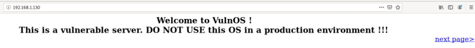
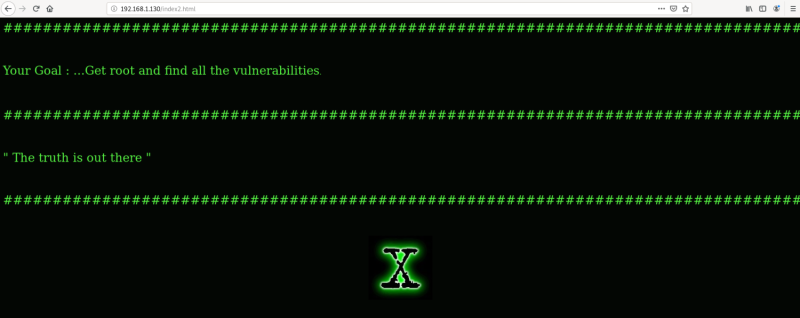
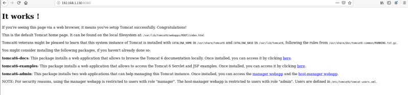
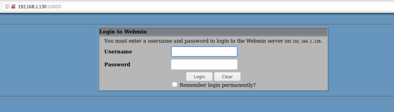

3. Browse to the website
a) PORT 80
Enter the IP address of the machine in our browser i.e. 192.168.1.130.

There's a link “next page” that takes us to another page.

b) PORT 8080
Back to the nmap scan, we saw that the port 8080 is open too, so we tried to open that on our browser and we get the default Tomcat “It works” page.

c) PORT 10000
The port 1000 is open to and is hosting the MiniServ Webmin Page.

d) PORT 3632
Looking up on the internet there's a vulnarability with the service DistCC. More info here.
 Index
Index